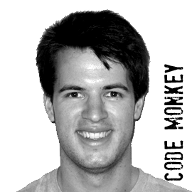
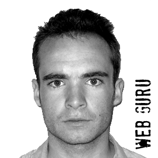

About Zombie Chickens
Zombie Chickens, the online chicken slaying phenomenon, started life as an XBOX game in mid-2010. On the night of the 7th May 2011, design genius Owen Williams, programming master Ben Selby and web guru George Cave came together for a blue bolt fuelled night of creativity to bring the game to the web.

Programmed the complete game engine includes graphics, sound effects, music and physics

Responsible for the website coding, Facebook integration, highscore table, and game branding
Created all of the chicken graphics, designed the gameplay and sourced / recorded the sound effects
Also thanks to Jeremy Bass for his invaluable gameplay contributions throughout the night.